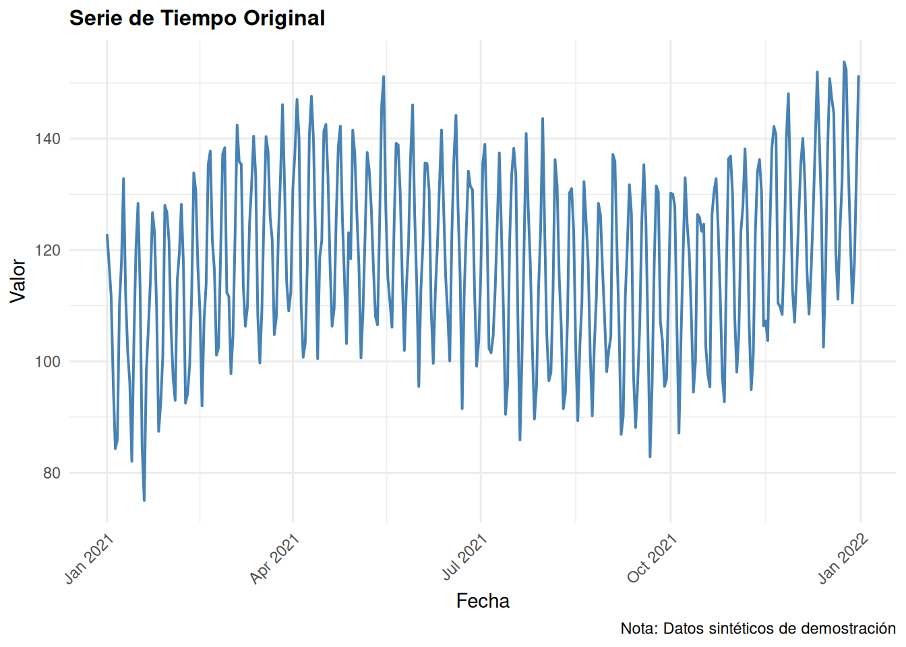
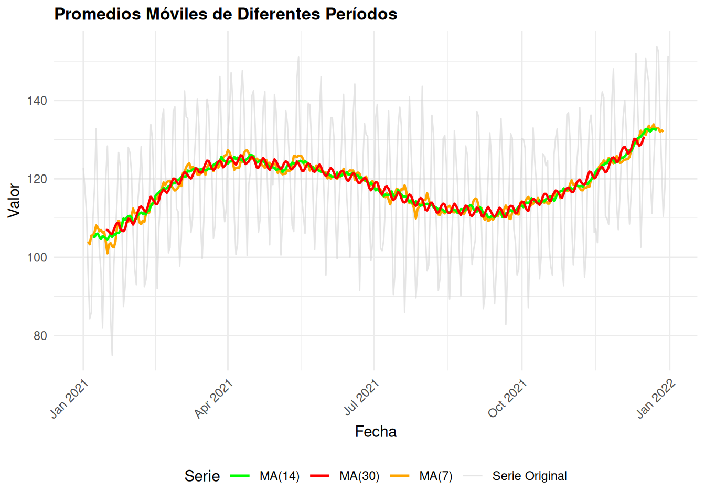
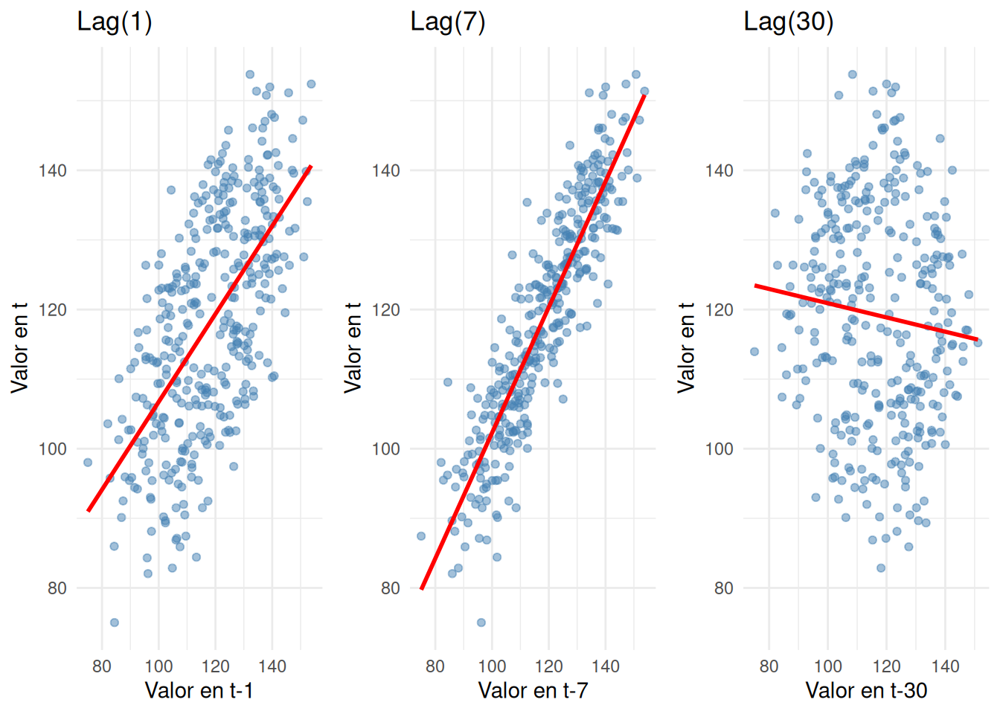
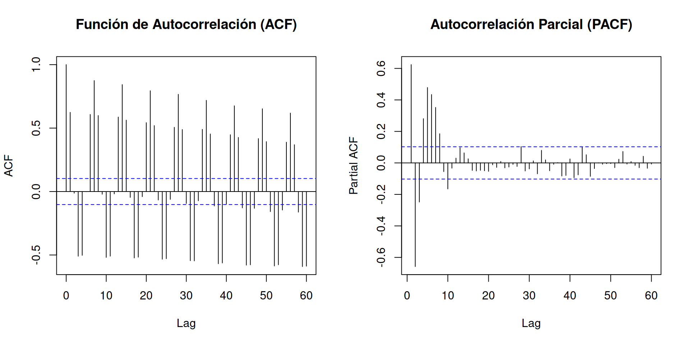
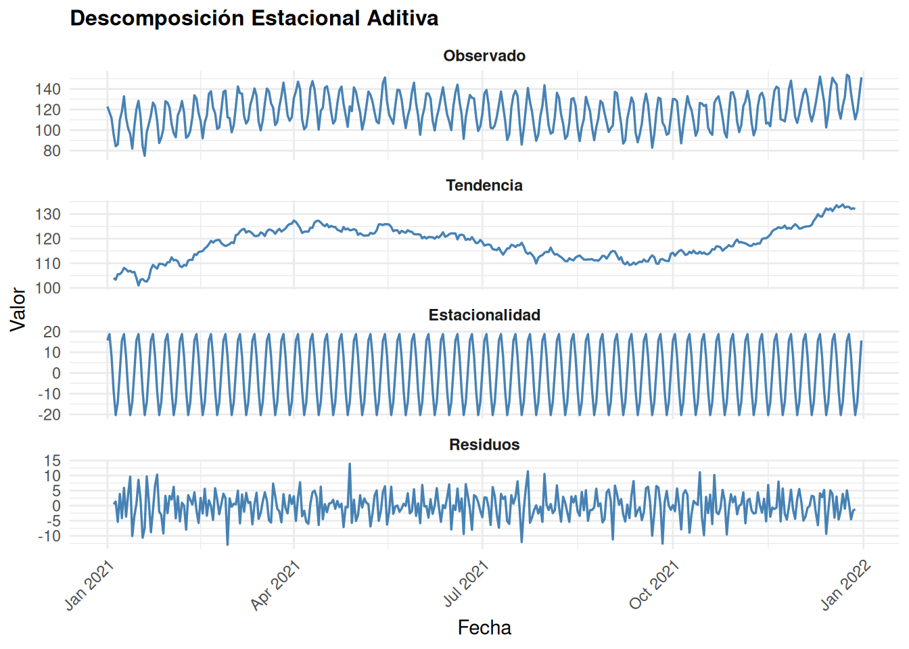

Chapter 2 Análisis de Series de Tiempo
En este capítulo realizamos un análisis exhaustivo de una variable de nuestro conjunto de datos de series de tiempo. Implementamos técnicas clave como promedios móviles, variables retardadas y descomposición estacional para entender patrones, tendencias y comportamientos cíclicos.
2.1 Preparación de Datos y Librerías
library(tidyverse)
library(forecast)
library(ggplot2)
library(gridExtra)
# Crear datos sintéticos de demostración
# (Estos serán reemplazados con datos reales cuando estén disponibles)
set.seed(42)
n_obs <- 365
fecha <- seq(as.Date("2021-01-01"), by = "day", length.out = n_obs)
# Serie con tendencia, estacionalidad e irregularidad
datos <- tibble(
fecha = fecha,
dia = 1:n_obs,
# Componente de tendencia
tendencia = 100 + 0.1 * dia,
# Componente estacional (patrón semanal y anual)
estacionalidad = 20 * sin(2 * pi * dia / 7) + 15 * sin(2 * pi * dia / 365),
# Componente de ruido
ruido = rnorm(n_obs, 0, 5),
# Variable observada
valor = tendencia + estacionalidad + ruido
)
# Convertir a serie de tiempo
ts_data <- ts(datos$valor, start = 1, frequency = 7)
head(datos)## # A tibble: 6 × 6
## fecha dia tendencia estacionalidad ruido valor
## <date> <int> <dbl> <dbl> <dbl> <dbl>
## 1 2021-01-01 1 100. 15.9 6.85 123.
## 2 2021-01-02 2 100. 20.0 -2.82 117.
## 3 2021-01-03 3 100. 9.45 1.82 112.
## 4 2021-01-04 4 100. -7.65 3.16 95.9
## 5 2021-01-05 5 100. -18.2 2.02 84.3
## 6 2021-01-06 6 101. -14.1 -0.531 86.02.2 1. Análisis General de la Serie
# Estadísticas descriptivas
summary_stats <- datos %>%
summarise(
Media = mean(valor),
Desv.Est. = sd(valor),
Mínimo = min(valor),
Máximo = max(valor),
Mediana = median(valor)
)
knitr::kable(summary_stats, caption = "Estadísticas descriptivas de la serie")| Media | Desv.Est. | Mínimo | Máximo | Mediana |
|---|---|---|---|---|
| 118.1598 | 16.0863 | 75.01815 | 153.7762 | 118.1238 |
# Gráfico de la serie original
plot_original <- ggplot(datos, aes(x = fecha, y = valor)) +
geom_line(color = "steelblue", linewidth = 0.7) +
labs(
title = "Serie de Tiempo Original",
x = "Fecha",
y = "Valor",
caption = "Nota: Datos sintéticos de demostración"
) +
theme_minimal() +
theme(
plot.title = element_text(face = "bold", size = 12),
axis.text.x = element_text(angle = 45, hjust = 1)
)
print(plot_original)
2.3 2. Análisis de Promedios Móviles
Los promedios móviles suavizan la serie eliminando ruido de corto plazo y revelando tendencias subyacentes. Calculamos múltiples ventanas para capturar patrones a diferentes escalas.
# Calcular promedios móviles de diferentes períodos
datos <- datos %>%
mutate(
MA_7 = zoo::rollmean(valor, k = 7, fill = NA),
MA_14 = zoo::rollmean(valor, k = 14, fill = NA),
MA_30 = zoo::rollmean(valor, k = 30, fill = NA)
)
# Gráfico comparativo de promedios móviles
plot_ma <- ggplot(datos, aes(x = fecha)) +
geom_line(aes(y = valor, color = "Serie Original"), linewidth = 0.5, alpha = 0.6) +
geom_line(aes(y = MA_7, color = "MA(7)"), linewidth = 0.8) +
geom_line(aes(y = MA_14, color = "MA(14)"), linewidth = 0.8) +
geom_line(aes(y = MA_30, color = "MA(30)"), linewidth = 0.8) +
scale_color_manual(
values = c("Serie Original" = "lightgray", "MA(7)" = "orange", "MA(14)" = "green", "MA(30)" = "red")
) +
labs(
title = "Promedios Móviles de Diferentes Períodos",
x = "Fecha",
y = "Valor",
color = "Serie"
) +
theme_minimal() +
theme(
plot.title = element_text(face = "bold", size = 12),
axis.text.x = element_text(angle = 45, hjust = 1),
legend.position = "bottom"
)
print(plot_ma)## Warning: Removed 6 rows containing missing values or values outside the scale range
## (`geom_line()`).## Warning: Removed 13 rows containing missing values or values outside the scale range
## (`geom_line()`).## Warning: Removed 29 rows containing missing values or values outside the scale range
## (`geom_line()`).
2.4 3. Variables Retardadas
Las variables retardadas (lags) capturan dependencias autocorrelacionadas: cómo los valores pasados influyen en el presente. Examinamos lags de 1, 7 y 30 días.
# Crear variables retardadas
datos <- datos %>%
mutate(
lag_1 = lag(valor, 1),
lag_7 = lag(valor, 7),
lag_30 = lag(valor, 30)
)
# Calcular matriz de correlaciones
lag_cols <- c("valor", "lag_1", "lag_7", "lag_30")
corr_matrix <- cor(as.matrix(datos[, lag_cols]), use = "complete.obs")
knitr::kable(
corr_matrix,
caption = "Matriz de Correlaciones: Valor Actual vs Variables Retardadas",
digits = 3
)| valor | lag_1 | lag_7 | lag_30 | |
|---|---|---|---|---|
| valor | 1.000 | 0.614 | 0.908 | -0.102 |
| lag_1 | 0.614 | 1.000 | 0.617 | 0.561 |
| lag_7 | 0.908 | 0.617 | 1.000 | -0.077 |
| lag_30 | -0.102 | 0.561 | -0.077 | 1.000 |
# Gráficos de dispersión: valor actual vs retardos
plot_lag1 <- ggplot(datos, aes(x = lag_1, y = valor)) +
geom_point(alpha = 0.5, color = "steelblue") +
geom_smooth(method = "lm", se = FALSE, color = "red") +
labs(title = "Lag(1)", x = "Valor en t-1", y = "Valor en t") +
theme_minimal()
plot_lag7 <- ggplot(datos, aes(x = lag_7, y = valor)) +
geom_point(alpha = 0.5, color = "steelblue") +
geom_smooth(method = "lm", se = FALSE, color = "red") +
labs(title = "Lag(7)", x = "Valor en t-7", y = "Valor en t") +
theme_minimal()
plot_lag30 <- ggplot(datos, aes(x = lag_30, y = valor)) +
geom_point(alpha = 0.5, color = "steelblue") +
geom_smooth(method = "lm", se = FALSE, color = "red") +
labs(title = "Lag(30)", x = "Valor en t-30", y = "Valor en t") +
theme_minimal()
# Combinar gráficos
lag_plot <- gridExtra::grid.arrange(plot_lag1, plot_lag7, plot_lag30, ncol = 3)## `geom_smooth()` using formula = 'y ~ x'## Warning: Removed 1 row containing non-finite outside the scale range
## (`stat_smooth()`).## Warning: Removed 1 row containing missing values or values outside the scale range
## (`geom_point()`).## `geom_smooth()` using formula = 'y ~ x'## Warning: Removed 7 rows containing non-finite outside the scale range
## (`stat_smooth()`).## Warning: Removed 7 rows containing missing values or values outside the scale range
## (`geom_point()`).## `geom_smooth()` using formula = 'y ~ x'## Warning: Removed 30 rows containing non-finite outside the scale range
## (`stat_smooth()`).## Warning: Removed 30 rows containing missing values or values outside the scale range
## (`geom_point()`).
## TableGrob (1 x 3) "arrange": 3 grobs
## z cells name grob
## 1 1 (1-1,1-1) arrange gtable[layout]
## 2 2 (1-1,2-2) arrange gtable[layout]
## 3 3 (1-1,3-3) arrange gtable[layout]2.4.1 Función de Autocorrelación (ACF) y Autocorrelación Parcial (PACF)
# Gráficos de ACF y PACF
par(mfrow = c(1, 2))
acf(datos$valor, main = "Función de Autocorrelación (ACF)", lag.max = 60)
pacf(datos$valor, main = "Autocorrelación Parcial (PACF)", lag.max = 60)
Interpretación: - Las correlaciones con lag_1 suelen ser altas (continuidad local). - Las correlaciones con lag_7 destacan patrones semanales (si existen). - Las correlaciones con lag_30 revelan dependencias mensuales o estacionales.
2.5 4. Descomposición Estacional Aditiva
La descomposición estacional separa la serie en componentes: tendencia, estacionalidad y residuos. Utilizamos el método clásico aditivo, asumiendo que: \[Y_t = T_t + S_t + E_t\]
donde \(T_t\) es la tendencia, \(S_t\) es la estacionalidad, y \(E_t\) son los residuos.
# Descomposición clásica aditiva
decomposed <- decompose(ts_data, type = "additive")
# Crear data frame para visualización con ggplot
decomp_df <- tibble(
fecha = datos$fecha,
observado = decomposed$x,
tendencia = decomposed$trend,
estacionalidad = decomposed$seasonal,
residuos = decomposed$random
) %>%
pivot_longer(cols = -fecha, names_to = "componente", values_to = "valor")
# Gráfico de descomposición
plot_decomp <- ggplot(decomp_df, aes(x = fecha, y = valor)) +
geom_line(color = "steelblue", linewidth = 0.6) +
facet_wrap(~factor(componente,
levels = c("observado", "tendencia", "estacionalidad", "residuos"),
labels = c("Observado", "Tendencia", "Estacionalidad", "Residuos")),
scales = "free_y", ncol = 1) +
labs(
title = "Descomposición Estacional Aditiva",
x = "Fecha",
y = "Valor"
) +
theme_minimal() +
theme(
plot.title = element_text(face = "bold", size = 12),
axis.text.x = element_text(angle = 45, hjust = 1),
strip.text = element_text(face = "bold")
)
print(plot_decomp)## Warning: Removed 12 rows containing missing values or values outside the scale range
## (`geom_line()`).
2.5.1 Análisis de Componentes
# Estadísticas de cada componente
component_stats <- tibble(
Componente = c("Tendencia", "Estacionalidad", "Residuos"),
Media = c(
mean(decomposed$trend, na.rm = TRUE),
mean(decomposed$seasonal, na.rm = TRUE),
mean(decomposed$random, na.rm = TRUE)
),
`Desv. Est.` = c(
sd(decomposed$trend, na.rm = TRUE),
sd(decomposed$seasonal, na.rm = TRUE),
sd(decomposed$random, na.rm = TRUE)
),
Mínimo = c(
min(decomposed$trend, na.rm = TRUE),
min(decomposed$seasonal, na.rm = TRUE),
min(decomposed$random, na.rm = TRUE)
),
Máximo = c(
max(decomposed$trend, na.rm = TRUE),
max(decomposed$seasonal, na.rm = TRUE),
max(decomposed$random, na.rm = TRUE)
)
)
knitr::kable(component_stats, caption = "Estadísticas de Componentes Descompuestos", digits = 3)| Componente | Media | Desv. Est. | Mínimo | Máximo |
|---|---|---|---|---|
| Tendencia | 118.115 | 6.637 | 101.001 | 133.888 |
| Estacionalidad | 0.043 | 13.937 | -20.369 | 18.798 |
| Residuos | -0.004 | 4.512 | -12.966 | 13.906 |
# Varianza explicada
var_total <- var(datos$valor, na.rm = TRUE)
var_trend <- var(decomposed$trend, na.rm = TRUE)
var_seasonal <- var(decomposed$seasonal, na.rm = TRUE)
var_residual <- var(decomposed$random, na.rm = TRUE)
variance_summary <- tibble(
Componente = c("Tendencia", "Estacionalidad", "Residuos"),
`Varianza` = c(var_trend, var_seasonal, var_residual),
`% del Total` = c(var_trend, var_seasonal, var_residual) / var_total * 100
)
knitr::kable(variance_summary, caption = "Varianza Explicada por Cada Componente", digits = 2)| Componente | Varianza | % del Total |
|---|---|---|
| Tendencia | 44.04 | 17.02 |
| Estacionalidad | 194.24 | 75.06 |
| Residuos | 20.36 | 7.87 |
2.6 5. Resumen e Insights
2.6.1 Hallazgos Principales
Promedios Móviles: La serie exhibe suavidad al aplicar MA(30), indicando una tendencia creciente clara con oscilaciones regulares.
Variables Retardadas: Las correlaciones decrecientes con mayores rezagos sugieren que la serie tiene memoria a corto plazo (dependencia principalmente en el día anterior) con patrones cíclicos semanales.
Descomposición Estacional:
- La tendencia muestra crecimiento consistente a lo largo del período.
- La estacionalidad contiene variaciones regulares, posiblemente con ciclos semanales y anuales.
- Los residuos muestran variación aleatoria alrededor de cero, indicando que los componentes principales capturan bien la estructura de la serie.
2.6.2 Implicaciones para Modelado Futuro
- Modelos ARIMA: Los patrones de ACF/PACF guían la selección de parámetros (p, d, q).
- Modelos Estacionales (SARIMA): La estacionalidad detectada justifica incluir términos estacionales.
- Métodos Avanzados: Machine learning o deep learning podrían capturar relaciones no lineales en los residuos.
2.6.3 Próximos Pasos
Para investigación futura con datos reales: - Validar la estacionalidad con pruebas estadísticas (Kruskal-Wallis, test estacional ANOVA). - Evaluar la estacionariedad con pruebas ADF (Augmented Dickey-Fuller). - Construir modelos predictivos basados en la estructura identificada. - Validar modelos con series de prueba (holdout set) o validación cruzada.